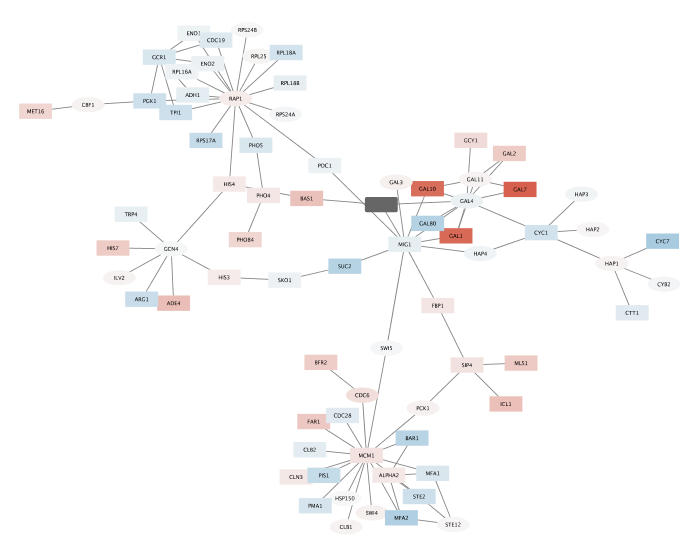
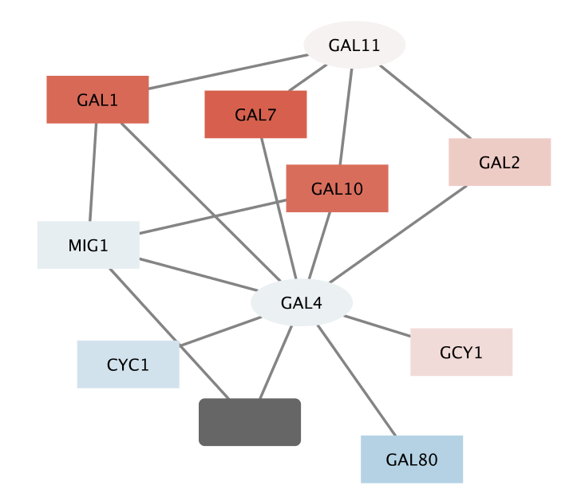

Basic Expression Analysis
This tutorial presents a scenario of how expression and network data can be combined to tell a biological story and includes these concepts:
- Visualizing networks using expression data.
- Filtering networks based on expression data.
- Assessing expression data in the context of a biological network.
The tutorial is designed to run as a demo in the CyBrowser app, with interactive buttons for each task.
Loading Network
- Start Cytoscape and load the demo session.
- When the network first opens, the entire network is not visible because of the default zoom factor used. To see the whole network, we can use the Fit Content function.
- You should now see this:
Visualizing Expression Data on Networks
Probably the most common use of expression data in Cytoscape is to set the visual properties of the nodes in a network according to expression data. This creates a powerful visualization, portraying functional relation and experimental response at the same time. Here, we will show an example of doing this.
The data used in this example is from yeast, and the genes Gal1, Gal4, and Gal80 are all yeast transcription factors. The experiments all involve some perturbation of these transcription factor genes.
Gal1, Gal4, and Gal80 are also represented in the interaction network, where they are labeled according to yeast locus tags: Gal1 corresponds to YBR020W, Gal4 to YPL248C, and Gal80 to YML051W.
- The experimental data is visible in the Node Table:
- Select a node in the network and the table will update to show only the corresponding row.

To learn more about Importing data, see the Cytoscape Manual.
- By default, the "Prefuse Force Directed Layout" is applied to organize the layout of the nodes.
- Let's change the layout to Compound Spring Embedder (CoSE) Layout.
Cytoscape supports many different layout algorithms, described in detail in the Cytoscape manual.
The network should now look like this:
To learn more about Styles, see our Styles Tutorial.
Filter Interactions
Your network contains a combination of protein-protein (pp) and protein-DNA (pd) interactions. Next, we will filter out the protein-protein interactions to focus on the protein-DNA interactions.
- First, let's select all protein-protein interactions.
- You should now see many edges in the network selected (i.e., colored red).
- Since we're only interested in the protein-DNA edges, we can delete the protein-protein edges we've just selected.
- You should now see many unconnected nodes in the network.
- Now, lets clean up the network by applying a layout.
- The largest component of the final filtered and cleaned up network should look like this:

Observe the Network
Notice that three dark red (highly induced) nodes are in the same region of the graph.
- Notice that there are two nodes that interact with all three red nodes: GAL4 (YPL248C) and GAL11 (YOL051W).
- Let's select these two nodes and their immediate neighbors.
- It is sometimes useful to create a new network from selected nodes.
With some layout and zooming, this new network should appear similar to the one shown:
